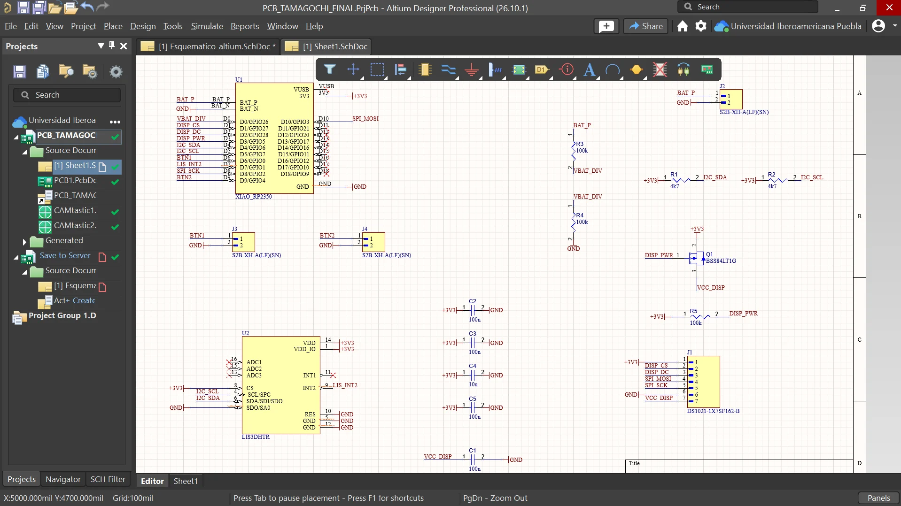
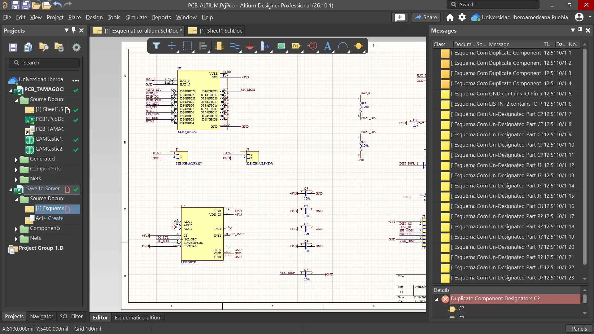

3. Esquemático
Archivo fuente: hardware/pcb_altium/Sheet1.SchDoc (Altium Designer 26, proyecto PCB_TAMAGOCHI_FINAL).

Hoja única. Arriba: XIAO (U1) y conector de batería J2. Centro: divisor de batería (R3/R4), pull-ups I2C (R1/R2), botones (J3/J4) y el interruptor del display (Q1/R5). Abajo: LIS3DHTR (U2), bypass (C1–C5) y el header del display (J1).
Mapa de pines del XIAO RP2350 (verificado)
Verificado contra las etiquetas de red del Sheet1.SchDoc y contra el archivo de variante del core (variants/seeed_xiao_rp2350/pins_arduino.h).
| Pad XIAO |
GPIO |
Red |
Conecta a |
Función |
| D0 |
26 (ADC0) |
VBAT_DIV |
punto medio R3/R4 |
Monitor de batería |
| D1 |
27 |
DISP_CS |
J1 pin 2 |
Chip select del display (software) |
| D2 |
28 |
DISP_DC |
J1 pin 3 |
Data/Command del display |
| D3 |
5 |
DISP_PWR |
gate de Q1 (+ R5) |
Energía del display (LOW = ON) |
| D4 |
6 |
I2C_SDA |
LIS3DH SDA + R1 |
I2C1 SDA |
| D5 |
7 |
I2C_SCL |
LIS3DH SCL + R2 |
I2C1 SCL |
| D6 |
0 |
BTN1 |
J3 pin 1 |
Botón 1 (INPUT_PULLUP, otro pin a GND) |
| D7 |
1 |
LIS_INT2 |
LIS3DH INT2 |
Despertar por movimiento |
| D8 |
2 |
SPI_SCK |
J1 pin 5 |
SPI0 SCK |
| D9 |
4 |
BTN2 |
J4 pin 1 |
Botón 2 (INPUT_PULLUP, otro pin a GND) |
| D10 |
3 |
SPI_MOSI |
J1 pin 4 |
SPI0 MOSI (SDA del display) |
| BAT+ |
— |
BAT_P |
J2 pin 1, R3 |
Batería (pad inferior del módulo, al cargador interno) |
| 3V3 |
— |
+3V3 |
todo lo lógico |
Salida del LDO del XIAO |
| GND |
— |
GND |
|
|
D3 = GPIO5 en el XIAO RP2350. En el XIAO RP2040 D3 era GPIO29; en el RP2350 no. Las notas anteriores decían "GPIO29" — el hardware está bien (la red va al pad D3) pero el firmware debe usar D3 / 5. Ver inconsistencia 1.
Header del display J1 (GC9A01, 7 pines)
| J1 pin |
Red |
Nota |
| 1 |
+3V3 |
RST del display fijo en alto (sin reset por hardware) |
| 2 |
DISP_CS |
|
| 3 |
DISP_DC |
|
| 4 |
SPI_MOSI |
|
| 5 |
SPI_SCK |
|
| 6 |
GND |
|
| 7 |
VCC_DISP |
Salida de Q1 (3.3 V conmutados) |
LIS3DHTR (U2, LGA-16) — conexiones según el esquemático
| Pin |
Nombre |
Conexión |
| 14 |
VDD |
+3V3 (+ C bypass) |
| 1 |
VDD_IO |
+3V3 (+ C bypass) |
| 8 |
CS |
+3V3 (modo I2C) |
| 4 |
SCL/SPC |
I2C_SCL |
| 6 |
SDA/SDI/SDO |
I2C_SDA |
| 7 |
SDO/SA0 |
GND → dirección I2C 0x18 |
| 9 |
INT2 |
LIS_INT2 → D7 (GPIO1) |
| 11 |
INT1 |
sin conectar (salida push-pull; no ir a GND) |
| 10 |
RES |
GND (reservado, obligatorio a GND) |
| 5, 12 |
GND |
GND |
| 13, 15, 16 |
ADC3/ADC2/ADC1 |
sin conectar |
Redes de energía
BAT_P ──┬── pad BAT+ del XIAO (cargador integrado)
├── J2 pin 1 (batería)
└── R3 ── VBAT_DIV ── R4 ── GND VBAT_DIV ──► D0 (ADC0)
+3V3 ───┬── Q1 source ── R5 ── Q1 gate (= DISP_PWR = D3)
├── LIS3DH VDD / VDD_IO / CS
├── R1 → I2C_SDA R2 → I2C_SCL
├── J1 pin 1 (RST del display)
└── C2, C3, C4, C5 → GND
Q1 drain ── VCC_DISP ── J1 pin 7 ── C1 → GND
Verificación del esquemático (ERC)
La validación del proyecto en Altium (Project → Validate PCB Project) arroja mensajes que se corrigieron durante el diseño:

Notas
- Los valores visibles en la hoja (4k7, 100k, 100n, 10u) son los parámetros de valor; los comentarios/descripciones de biblioteca de algunos símbolos dicen otra cosa (953 kΩ, 470 pF). Ver inconsistencia 8.
- El comentario de J2/J3/J4 dice
S2B-XH-A(LF)(SN) pero la huella es JST_S2B-PH-K-S(LF)(SN) (PH, 2.0 mm). Es el comentario el que está mal.